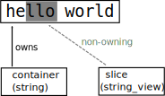
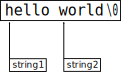

<!doctype html>
<html lang="en">
  <head>
    <meta charset="utf-8">

    <title>assert_zerocopy</title>

    <meta name="author" content="Doug Hoyte">

    <meta name="apple-mobile-web-app-capable" content="yes" />
    <meta name="apple-mobile-web-app-status-bar-style" content="black-translucent" />

    <meta name="viewport" content="width=device-width, initial-scale=1.0, maximum-scale=1.0, user-scalable=no, minimal-ui">

    <link rel="stylesheet" href="../reveal.js/css/reveal.css">
    <link rel="stylesheet" href="../reveal.js/css/theme/black.css" id="theme">

    <!-- Code syntax highlighting -->
    <link rel="stylesheet" href="../reveal.js/lib/css/zenburn.css">

    <!-- Printing and PDF exports -->
    <script>
      var link = document.createElement( 'link' );
      link.rel = 'stylesheet';
      link.type = 'text/css';
      link.href = window.location.search.match( /print-pdf/gi ) ? '../reveal.js/css/print/pdf.css' : '../reveal.js/css/print/paper.css';
      document.getElementsByTagName( 'head' )[0].appendChild( link );
    </script>

    <!--[if lt IE 9]>
    <script src="../reveal.js/lib/js/html5shiv.js"></script>
    <![endif]-->

    <style>
      .reveal .slides h1, .reveal .slides h2, .reveal .slides h3 {
        text-transform: none;
      }

      .two-column {
        display: flex;
        flex-wrap: wrap;
      }

      .two-column em {
        margin: 20px;
      }

      a {
        font-size: 90% !important;
      }
    </style>
  </head>

  <body>
    <div class="reveal">
      <div class="slides">

<!------------------------------------------------------->


<section data-markdown><script type="text/template">

# assert_zerocopy

Doug Hoyte

</script></section>


<section data-markdown><script type="text/template">

## std::string_view

* `string_view` was added in C++17
* "Non-owning" string
  * Won't `free()` its backing memory when destroyed
  * Useful for taking "slices" from a string without having to copy data

</script></section>


<section data-markdown><script type="text/template">

## Slices

    std::string container = "hello world";

    std::string_view containerView(container);

    std::string_view slice = containerView.substr(2, 3);

    std::cout << slice; // prints "llo"

</script></section>


<section data-markdown><script type="text/template">



</script></section>


<section data-markdown><script type="text/template">

## Benefits of string_view

* Avoids copying overhead
* Operating on same memory reduces load on memory caches 
* Can avoid touching memory at all, when portions of it not needed

</script></section>


<section data-markdown><script type="text/template">

## Problem

* It's easy to accidentally introduce a copy when you didn't intend to
* And what about 3rd party libraries: How can you know if they are copying?
      std::string myBigData = download();

      EfficientParser p(myBigData);

      std::string_view header = p.getHeader();

      // Was the header copied?

</script></section>


<section data-markdown><script type="text/template">

## assert_zerocopy

<pre class="hljs js">std::string myBigData = download();

EfficientParser p(myBigData);

std::string_view header = p.getHeader();

<span style="color: yellow">assert_zerocopy(myBigData, header);</span>
</pre>

</script></section>


<section data-markdown><script type="text/template">

## Macro

* `assert_zerocopy()` is a macro
  * Aborts process with error if copying occurred
* Expands into `assert()` (which is also a macro)
  * If `NDEBUG` is defined, then assertions are compiled out (no run-time overhead)

</script></section>


<section data-markdown><script type="text/template">

## assert_copied()

* `assert_copied()` is the opposite
  * Aborts if it was **not** copied

</script></section>


<section data-markdown><script type="text/template">
 
## hoytech::is_zerocopy()

* There is also a function: `hoytech::is_zerocopy()`
* This is what the macros use, but is available separately also

</script></section>


<section data-markdown><script type="text/template">

## Bonus quiz-time!

Does this abort?

    assert_zerocopy("hello world", "world");

</script></section>


<section data-markdown><script type="text/template">

## Answer

* Depends on compiler optimizations!
* Common suffix de-duplication
  * Aborts on `-O0`, succeeds on `-O1` or higher



</script></section>


<section data-markdown><script type="text/template">

## Thank you

hoytech-cpp github repo:<br/>
[https://github.com/hoytech/hoytech-cpp/](https://github.com/hoytech/hoytech-cpp/)

*Zero Copy* (book I am working on):<br/>
[https://leanpub.com/zerocopy](https://leanpub.com/zerocopy)

</script></section>


<!------------------------------------------------------->


      </div>

    </div>

    <script src="../reveal.js/lib/js/head.min.js"></script>
    <script src="../reveal.js/js/reveal.js"></script>

    <script>

      // Full list of configuration options available at:
      // https://github.com/hakimel/reveal.js#configuration
      Reveal.initialize({
        controls: true,
        progress: true,
        history: true,
        center: true,

        transition: 'none', // none/fade/slide/convex/concave/zoom

	math: {
          mathjax: '../lib/MathJax/MathJax.js',
          config: 'TeX-AMS_SVG-full',
	},

        // Optional reveal.js plugins
        dependencies: [
          { src: '../reveal.js/plugin/markdown/marked.js', condition: function() { return !!document.querySelector( '[data-markdown]' ); } },
          { src: '../reveal.js/plugin/markdown/markdown.js', condition: function() { return !!document.querySelector( '[data-markdown]' ); } },
          { src: '../reveal.js/plugin/highlight/highlight.js', async: true, callback: function() { hljs.initHighlightingOnLoad(); } },
          { src: '../reveal.js/plugin/math/math.js', async: true },
        ]
      });

    </script>

  </body>
</html>
